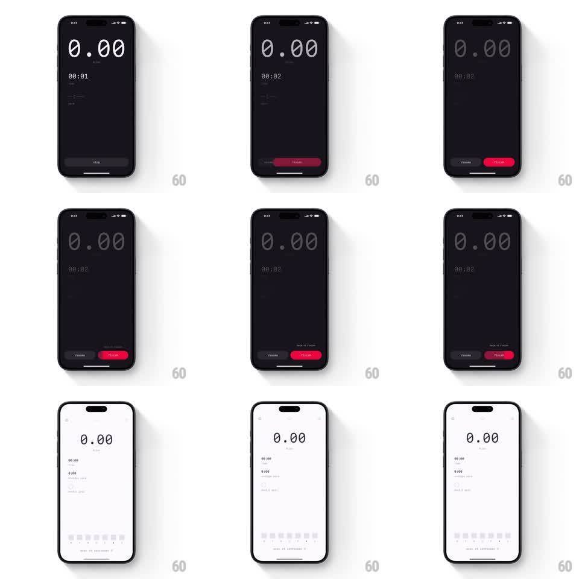

Media
Frame-by-frame

Rebuild this interaction 1:1: Miles' hold-to-finish - holding the red FINISH button fills it up while the dark tracker dims, and completing the hold flips the whole screen into the light-mode workout summary.

Rebuild this interaction 1:1: Miles' hold-to-finish - holding the red FINISH button fills it up while the dark tracker dims, and completing the hold flips the whole screen into the light-mode workout summary. ## Integration Integration: stack-agnostic spec - springs given as stiffness/damping, timed motions as duration + curve; map every value to your framework and animation library of choice. ## Scene Miles' dark workout tracker: a huge "0.00" miles readout, a running timer, small stat rows, and a STOP button at the bottom. When the workout can end, the bottom bar becomes two buttons: a dark "RESUME" and a red "FINISH". Holding FINISH fills it while the rest of the screen dims; completing the hold wipes the screen into the light summary: same big numbers now in black on white, stat rows, and a week strip of day dots at the bottom. ## Motion spec Pattern: hold-to-confirm into theme flip, ~1.2s hold plus 600ms transition. - On touch down, a brighter red fill sweeps left to right inside the FINISH button (linear, ~1.2s to full) and the label reads "Hold to Finish". - As the fill progresses, the tracker content dims proportionally (opacity to 40 percent by full hold); releasing early cancels - the fill drains back (300ms) and the screen restores. - On completion, the button flashes full white, then the entire screen crossfades dark to light (500ms): backgrounds, numbers, and stats invert together, and the bottom controls swap for the week strip. - The summary's stat values settle with a short count-up (400ms). ## Calibration - The dim is tied to fill progress - the two are the same value, not two animations. - The theme flip is total: every surface changes, nothing stays dark. ## Reduced motion Button completes instantly after hold; screens crossfade. ## Don't miss - The hold is cancelable until the very end - partial holds visibly drain back. - The number "0.00" survives the flip, same position, inverted color.